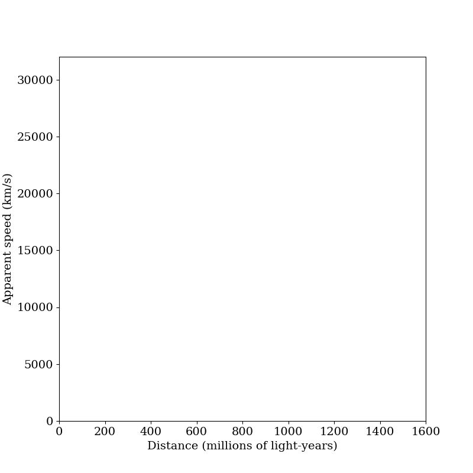
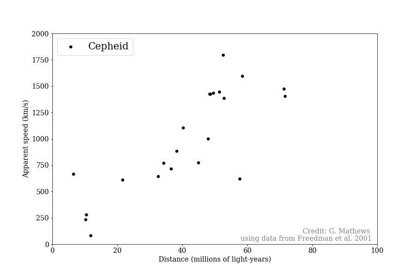
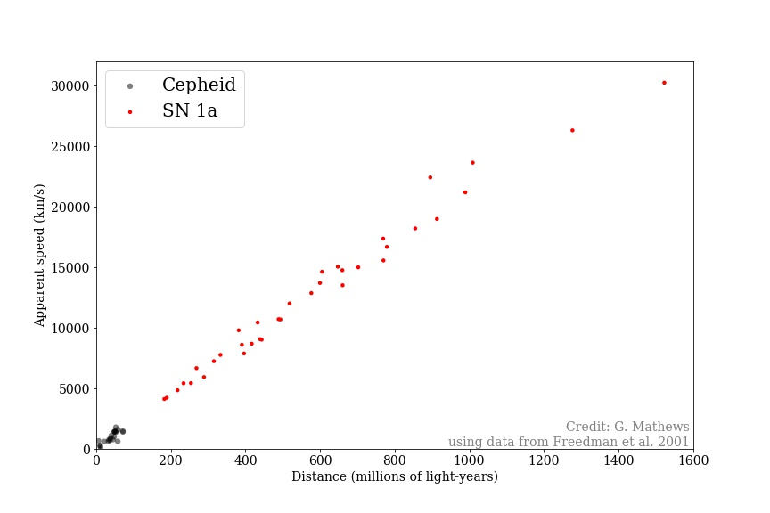
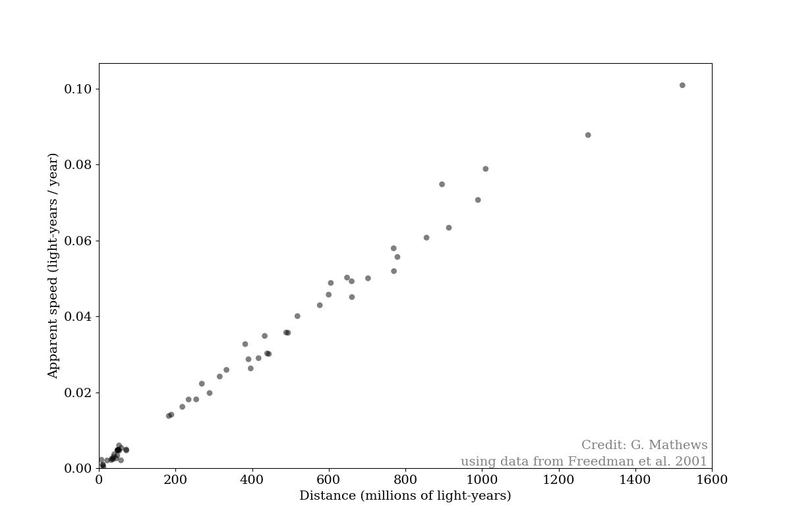
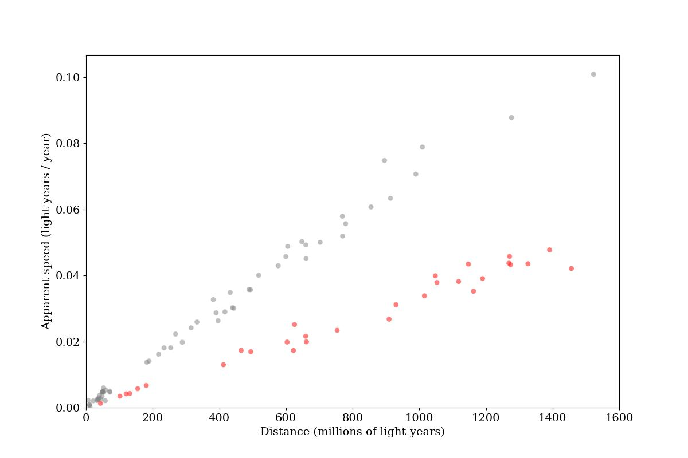

Blank Hubble plot, showing apparent recession speed in units of km/s and distance in millions of light-years. Useful for sketching plots, or to use on assignments where students sketch

Hubble plot showing Cepheid measurements. These objects are the Cepheids in nearby galaxies that were instrumental to discovering the expansion of the universe (Edwin Hubble's 1929 sample), though with modern measurements taking into account additional details later figured out for converting Cepheid periods to luminosities.

Hubble plot adding in Supernova type 1A measurements. These extend the distance scale from 100 million to 1.6 billion light-years, illustrating that the pattern which is spotted among nearby galaxies extends much further. The sample was truncated to a relatively short distance to emphasize values useful for calculating the age of the universe, and avoiding the distraction of the changing expansion rate (an effect that is small enough to not dramatically change the result of the approximation taught here, but noticable enough to distract students)

Combined dataset, displaying speed as ly / y so as to simplify calculations for students.

Model Hubble plot for a simulated expansion history to compare to our actual history.

Simulations (all done with Netlogo, code is available under the Netlogo code tab for each)
Cosmological Expansion with Multiple Galaxies and Redshifting Photons. Simulation showing a number of galaxies being carried away from an observer by the epansion of space. Each galaxy emits photons towards the observer, and their relative motion and redshifting is tracked (again, taking into account the expansion of space). When each photon reaches the observer on the left, its redshift is converted to an apparent speed (via Doppler-shift equation), and its initial distance is plotted. The ability to pause and clear the plot allows for simulation of an observers' experience - i.e., we only detect and measure the photons that are reaching us now, rather than all the photons that have ever been sent to Earth - and thus, this can be used to simulate our observations of redshifts of distant objects and even qualitatively re-create (by changing the expansion rate) the observed change in the slope of the Hubble plot.